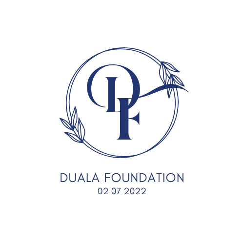
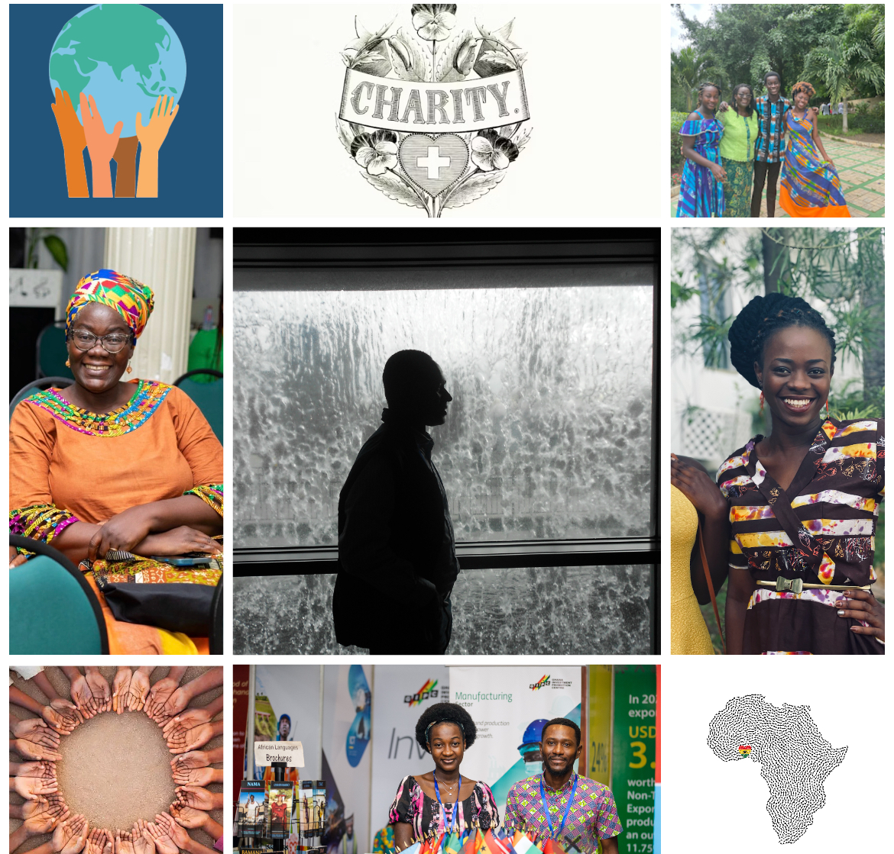
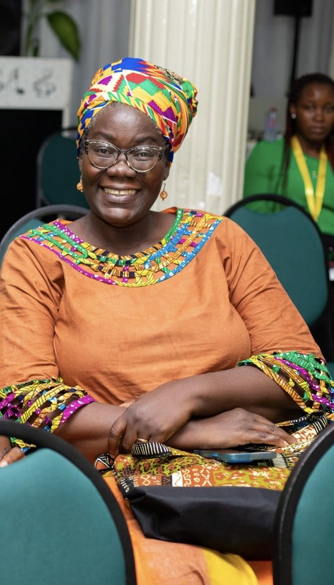
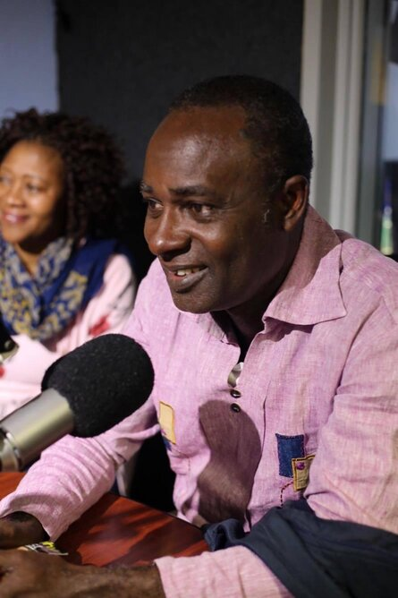

Awo Otchere
Founder
Awo Otchere is the wife of the late Mr. Kwame Otchere, in whose honor the foundation is named. As the founder, she provides the vision and strategic direction of the NGO, ensuring that its mission is carried out with love and legacy in mind.
Awo Otchere(Founder)

Kwame Otchere (Duala)
Although Mr. Kwame Otchere is no longer alive, his life’s work, values, and dedication to community upliftment inspire everything the foundation does. The NGO proudly carries his name as a reminder of his legacy of service and compassion.
Kwame Otchere (Duala)
Esi Akotia
Program Coordinator
Esi ensures the day-to-day implementation of educational and women empowerment programs. she works directly with local schools, families, and loan recipients, and reports progress to the founder. Her energy and passion for community development make him an essential part of the team.
Esi Akotia
Our Mission To upscale members of small communities by channeling their passion and applying knowledge to solve problems around them with available resources, and thereby improve their livelihoods. We also aim to mentor youth to redirect their education, skills, ideas, and enthusiasm back into their communities to enhance productivity and self-reliance. Our Vision We envision a future where communities are uplifted and self-belief is restored. Our goal is to spark a mindset shift—one that is solution-oriented, empowering, and grounded in possibility. Through inspiration, practical knowledge, and meaningful action, we help individuals combine potential with advanced skills to teach, reach, and achieve more. Who We Are The Duala Foundation is built on love for people and belief in the power of local action. We serve as a bridge between passion and opportunity, helping ordinary people do extraordinary things in their own communities. Our strength lies in collaboration—with donors, partners, volunteers, and, most importantly, the people we serve.